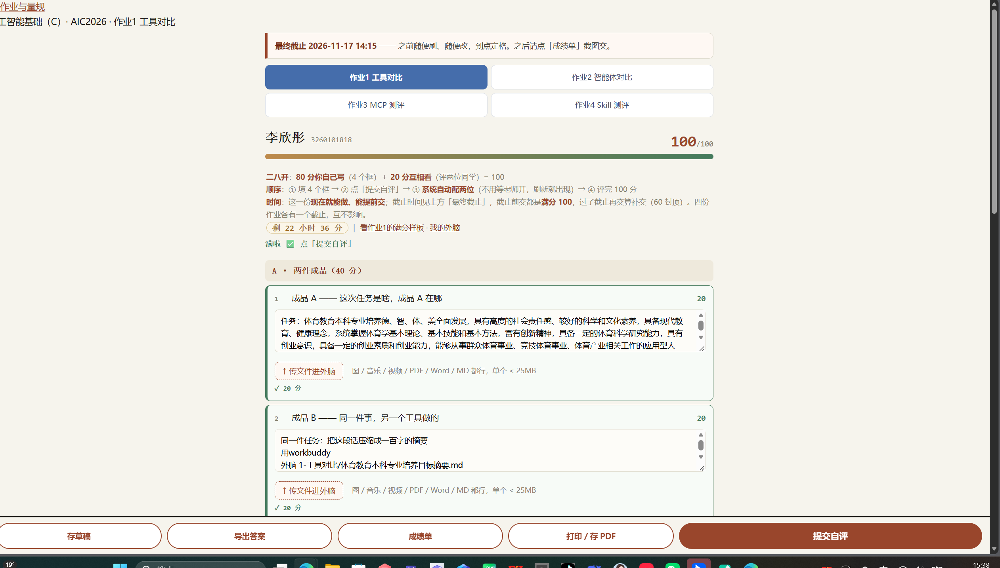

从学习通上的中国风符号审校测试，到人工智能课程的工具对比作业 —— 两份满分答卷，记录我在 AI 工具理解与应用上的成长。
这是一份关于中国传统符号与 AI 图像生成关系的在线测试。题目涵盖：
• 传统艺术符号的文化内涵（如戏曲脸谱的象征意义）
• AI 生成图像时正确使用文化符号的原则
• 如何避免文化刻板印象与元素堆砌
• 水墨色调、传统纹样在现代设计中的应用
最终答案为 abbbbbcbbcb，全部正确。

这次作业要求用两种不同的 AI 工具完成同一项任务，对比成品差异：
• 成品 A：体育教育专业培养目标描述（含四项专业能力要求）
• 成品 B：把这段话压缩成 100 字摘要，使用 workbuddy 生成 MD 文件
评分维度为二八开：80 分给自己互评，20 分系统自动批阅。最终获得满分。
AI 生成图像时不能随机堆砌传统元素，要理解每个符号的文化内涵和语境。
不同 AI 工具有不同专长：长文本生成、摘要压缩、格式转换各有最佳工具。
明确的任务描述 + 具体的输出格式要求，是让 AI 产出符合预期的关键。
不只是接受 AI 输出，还要能对比、评估、优化，形成自己的判断标准。
前几次的作品都是"做出一个东西"——概念图、游戏、旋律、海报。这次不一样，是考试和作业，检验的是我对 AI 工具和相关概念的理解深度。
中国风符号那套题让我意识到，AI 图像生成远不止"好看"那么简单。把戏曲脸谱、水墨山水随便贴上去不叫"中国风"，理解背后的文化逻辑和使用场景才是。这也让我重新审视了之前自己做的那些 AI 生成作品——有没有在无意中点犯了文化刻板印象？
工具对比作业则让我体会到"没有最好的工具，只有最合适的工具"。让不同 AI 做同一件事，差异比想象中大得多。学会根据任务选工具，比只会用一个工具更重要。